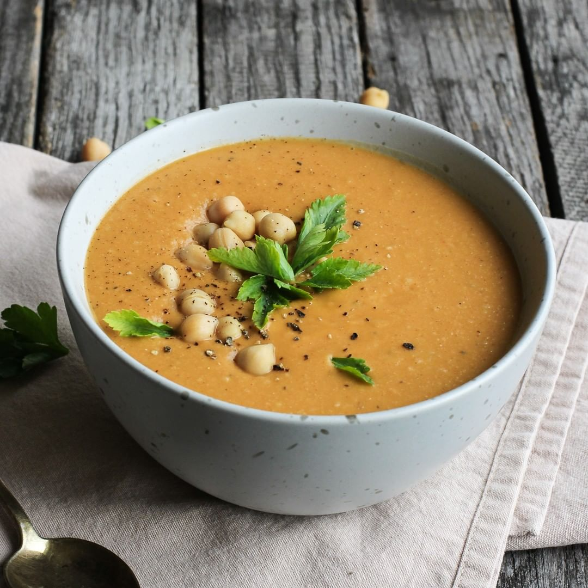

Polievky 🍲 podľa @jemezdravo.eu — Normy Jedál
Cícer používame v našich receptoch radi a často. Je výborným zdrojom železa, preto je ideálny aj pre vegetariánov a vegánov. Pomáha proti obezite, kardiovaskulárnym chorobám a vysokému cholesterolu. V dnešnom recepte sme ho použili do polievky.
🥄 Polievka s cícerom 🥄
Príprava: 15 minút
Tepelná úprava: 30 minúty
Obtiažnosť: ľahké
Počet porcií: 4 porcie
Nutričné informácie na 1 porciu: 311 kcal 12 g bielkovín 46 g sacharidov 9 g tukov
INGREDIENCIE
1 stredná cibuľa
1 lyžica olivového oleja
40 g celozrnnej múky
½ lyžičky nastrúhaného
muškátového orieška
2 l zeleninového vývaru
1 lyžička mletej údenej papriky
300 g predvareného cícera
100 g bielej predvarenej fazule
4 lyžice bulguru
120 ml ovsenej smotany
čerstvá petržlenová vňať na ozdobenie
soľ
čierne korenie
POSTUP PRÍPRAVY
1. Vo väčšom hrnci na olivovom oleji speníme najemno nakrájanú
cibuľu. Všetko zaprášime celozrnnou múkou a premiešame. Pridáme údenú papriku a muškátový oriešok. Zalejeme vývarom a do hrnca pridáme cícer spoločne s fazuľou.
2. Necháme 10 – 15 minút prevariť a prisypeme bulgur. Varíme
pod pokrievkou ďalších 10 minút, potom prilejeme smotanu.
3. Polievku rozmixujeme, dochutíme soľou a čiernym korením a podávame posypané čerstvou petržlenovou vňaťou.
TIP: Namiesto bulguru môžete rovnakým spôsobom použiť celozrnný kuskus.
#cícer #cicer #zeleninovapolievka #polievka #polievky #cicerovapolievka #kremovapolievka #varilsom #varilasom #polievkajezaklad #milujempolievky #recepty #varimzdravo #presov #milujemvarenie #jedlojelaska #topjedlo #nebickovpapulke #jemezdravoachutne #obedovemenu #jemprelepsisvet